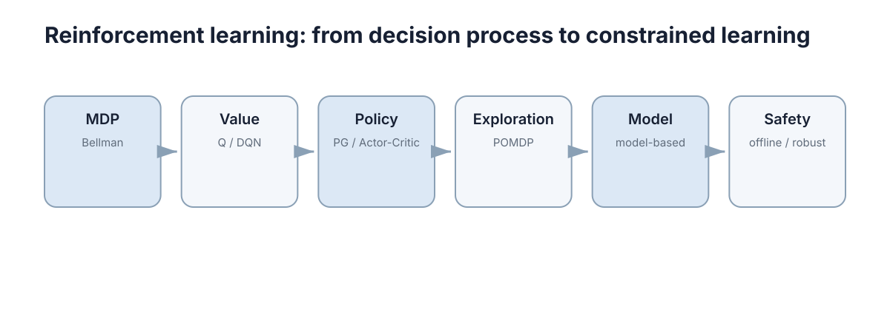

Reinforcement Learning
强化学习研究的是：当每个决策都会改变未来、而未来的好坏又反过来定义当下决策的价值时，智能体如何只靠交互数据学会做决策。 它与监督学习最大的区别在于，没有人告诉你"这一步动作的正确答案是什么"，你只看到奖励，而这个奖励只反映一步的结果。主线从 MDP 与 Bellman 方程出发，依次进入价值学习、策略学习，再处理探索、模型以及安全与离线数据问题。

本节要解决的问题
监督学习里样本是 \((x,y)\)，损失函数直接告诉你错在哪里。强化学习里样本是 \((s_t,a_t,r_{t+1},s_{t+1})\)，你只得到一个标量奖励，于是至少有三层麻烦：
- 信用分配：奖励发生在 \(t+1\)，但可能是 \(t-5\) 时刻某个动作造成的，也可能是十几步之前埋下的伏笔。要最大化的是累计回报
而不是任何单步奖励。
-
数据分布随策略变化：策略一改，采集到的状态分布立刻改变，训练数据不再是固定分布上的独立采样。这是"训练很稳"和"训练崩掉"之间常常只差一个超参数的根源。
-
探索与利用的冲突：只做当前认为最好的动作，就永远无法发现可能更好的动作；一直随机试又拿不到好成绩。二者不可兼得，只能在时间上分配。
| 问题 | 具体表现 | 数学根源 | 对应章节 |
|---|---|---|---|
| 信用分配 | 奖励稀疏时几乎学不动，梯度信号接近零 | 目标是 \(\sum_k\gamma^k r_{t+k+1}\)，单步奖励与动作无直接对应 | 01、03 |
| 分布漂移 | 同一策略的两次评估差异巨大，训练曲线反复 | 数据分布 \(d^\pi(s)\) 依赖 \(\pi\)，样本不是 i.i.d. | 02、06 |
| 探索不足 | 早期一次错误估计导致某些动作永不被尝试 | 贪心策略的支撑集可能永久缺失 | 04 |
| 样本昂贵 | 真机一天只能跑几千步 | 每个样本都需要一次真实交互 | 05 |
| 无法试错 | 错误动作直接造成不可逆损伤 | 只优化奖励，没有代价约束 | 06 |
因此本节的六章其实在回答同一链条上的六个问题：奖励如何被形式化？价值如何被估计？策略如何被直接优化？数据从哪里来？能不能不要真实交互？不知道的地方如何保证安全？
六章的推进逻辑
| 章 | 核心对象 | 一句话推进 | 依赖前一章的地方 |
|---|---|---|---|
| 01 MDP 与 Bellman | \(P,R,\gamma\)、\(V^\pi,Q^\pi,Q^*\) | 把"连续决策"写成五元组，把长期回报写成递归 | 无，本节形式基础 |
| 02 价值方法 | \(Q(s,a;\theta)\)、TD 误差 | 用一步自举目标从采样中学 \(Q^*\)，再用 \(\arg\max\) 选动作 | Bellman 最优方程 |
| 03 策略与 Actor–Critic | \(\pi_\theta(a\mid s)\)、优势 \(A^\pi\) | 不先学价值再选动作，而是直接对策略求梯度 | \(Q^\pi\)、\(V^\pi\) 的定义 |
| 04 探索与 POMDP | 计数与不确定度、信念 \(b(s)\) | 数据从哪来、观测不全时状态还够不够用 | 状态充分性的前提 |
| 05 模型两条路线 | \(\hat P(s'\mid s,a)\) | 用不用学一个世界模型，决定样本效率与偏差结构 | MDP 五元组本身 |
| 06 安全、鲁棒与离线 | 约束回报、分布偏移 | 奖励之外还有代价，数据可能完全不能试错 | 前面全部章节 |
推进逻辑可以概括成一句：先把问题写成方程（01），再决定学值、学策略还是学模型（02 / 03 / 05），最后处理"数据不够真实"这件在工程里必然发生的事（04 / 06）。
一个常见的错位是跳过 01 直接调算法：这样做在玩具环境里往往能跑通，一旦策略不收敛就无从判断是 \(\gamma\) 设错、状态不充分，还是更新目标构造函数有误。反过来，把 01 的 Bellman 关系写清楚之后，后面每一章的目标函数都只是它的某种估计形式，调试时也就能逐项对照"偏差从哪来、方差从哪来"。
概念地图
图中六个方框是一条从左到右的箭头链，标题为 "from decision process to constrained learning"，即从"纯决策过程"走向"带约束的学习"。逐节点解释如下：
- MDP / Bellman（起点）：定义问题本身。五元组 \(\mathcal M=(\mathcal S,\mathcal A,P,R,\gamma)\) 加上 Bellman 递推
这是全文唯一不需要"学"的东西，它是定义。
- Value / Q, DQN：把 Bellman 关系变成学习目标。TD 误差 \(\delta_t=r_{t+1}+\gamma V(s_{t+1})-V(s_t)\) 是这一支的引擎，DQN 只是把 Q 表换成带经验回放与目标网络的网络。
- Policy / PG, Actor–Critic：当动作连续、或 \(\arg\max_a Q(s,a)\) 不可枚举时，直接对 \(\nabla_\theta J(\theta)\) 做随机梯度上升，价值网络退居"评委"（critic）角色。
- Exploration / POMDP：回答"数据够不够"。前三个框默认数据充足且能访问状态，这一框把"必须试过才知道"和"看到的不是真实状态"两件事拆开处理。
- Model / model-based：学 \(\hat P,\hat R\) 后在想象中规划。样本效率通常高一个量级，代价是模型偏差会被规划放大。
- Safety / offline, robust：把目标从"最大化奖励"改成"奖励 + 约束"的多目标结构，并处理数据集固定、无法在线试错的离线设定。
| 节点 | 数学对象 | 回答的问题 | 对应章节 |
|---|---|---|---|
| MDP / Bellman | \(\mathcal M=(\mathcal S,\mathcal A,P,R,\gamma)\) | 问题怎么定义？最优意味着什么？ | 01 |
| Value / DQN | \(Q(s,a;\theta)\) | 每个动作长期值多少？ | 02 |
| Policy / Actor–Critic | \(\pi_\theta(a\mid s)\)、\(A^\pi\) | 动作连续时如何直接优化策略？ | 03 |
| Exploration / POMDP | \(N(s,a)\)、\(b(s)\) | 数据从哪来？观测够不够？ | 04 |
| Model | \(\hat P(s'\mid s,a)\)、\(\hat R\) | 能否不靠真实交互学习？ | 05 |
| Safety | \(\max J(\pi)\) s.t. \(C(\pi)\le d\) | 出错代价不可接受时怎么办？ | 06 |
六个节点之间是接口关系而非替代关系：后面每一框都要用到前面框的对象定义，工程上常见的是 02 与 03 混用（离散动作头 + 连续参数），或者 05 提供模型、02 / 03 提供策略。
与其他章节的接口
| RL 概念 | 用在哪一章 | 在那里解决什么问题 |
|---|---|---|
| Bellman 最优性、折扣回报 | ../control-theory/04-lqr.md | 最优控制与 RL 在数学上是同一族问题：LQR 的 Riccati 递推是二次代价、线性动态下 Bellman 方程的特例，模型已知时无需采样 |
| Nash 均衡、最佳响应 | ../game-theory/02-best-response-nash.md | 多智能体同时学习时"最优"不再唯一：\(Q_i^*\) 依赖对手策略，收敛目标由 \(Q^*=\max_a\) 变成 Nash 均衡点 |
| CTDE（集中训练、分散执行） | ../multi-agent-systems/05-multi-agent-learning.md | 训练时用全局信息当 critic 输入，执行时只留局部观测，缓解非平稳性与信用分配 |
| Markov 链、稳态分布 | ../mathematics/05-markov-processes.md | 折扣回报的有限性、策略诱导的马尔可夫链、遍历性与长期平均回报 |
| 期望、条件期望、方差 | ../mathematics/03-probability-random-variables.md | \(\mathbb E_\pi[\cdot]\) 的严格定义；TD 与 MC 目标的偏差—方差差异本质是条件期望展开程度不同 |
| 路径规划与运动规划 | ../robotics/04-path-motion-planning.md | RL 输出的是策略而非路径：规划在给定目标与约束下求可行轨迹，RL 在难建模的动态里用回报学习控制律 |
| 运行时保障、安全滤波器 | ../robustness-safety/05-safe-learning-runtime.md | 学习策略的"大概率安全"与系统的"必须安全"之间存在缺口，需要运行时监督、约束投影与回退控制 |
可以看到，Bellman 方程把最优控制、动态规划、RL 放在同一张地图上，Nash 均衡把这张地图扩展到多智能体，而运行时保障负责把学到的策略接回真实系统。
使用这张表时有一点要留意：同一个数学对象在不同章节里承担的职责不同。例如 \(V\) 在 01 里是 Bellman 算子作用的函数，在 02 里变成回归目标的一部分，在 03 里又被当作降低梯度方差的基线；\(Q\) 在 ../game-theory/02-best-response-nash.md 中还额外带上了对手策略这一层依赖。先确认"当前这章把 \(V\) 当作什么用"，再去看它的估计误差如何传播，读起来会顺很多。
从算法到实机的差距
教科书设定里成立的假设，在真机上几乎每一条都要重新检查。下表左右两列是同一件事的两种世界：
| 假设项 | 仿真里默认成立 | 实机上常见的情况 | 典型缓解手段 |
|---|---|---|---|
| 状态可观测 | 直接读到 \(s\)，且 \(s\) 满足 Markov 性 | 只有带噪传感器读数，真实状态藏在观测之后 | 观测堆叠、状态估计、转向 POMDP |
| 转移是平稳的 | \(P(s'\mid s,a)\) 不随时间变 | 电池衰减、地面摩擦变化、负载漂移使 \(P\) 缓慢漂移 | 在线自适应、领域随机化、系统辨识 |
| 奖励易写 | 手写稠密奖励即可引导 | 稀疏奖励加塑形引入偏差，主目标被"钻空子" | 奖励塑形、课程学习、约束式表述 |
| 试错免费 | 可以撞墙几百万次 | 每次碰撞都有硬件成本或人身风险 | 离线 RL、安全层、仿真到实机迁移 |
| 样本量不限 | 千万步交互很便宜 | 真机一天可能只有几千步 | model-based、经验回放、优先采样 |
| 动作可连续 | 直接给 \(\arg\max_a Q(s,a)\) 就行 | 连续动作下该 \(\max\) 是每步一次非凸优化 | 策略梯度、Actor–Critic、动作离散化 |
| 环境不针对你 | 奖励就是奖励 | 学习系统会利用奖励漏洞，对手会适应 | 鲁棒与对抗 RL、约束 MDP |
| 评估充分 | 跑几个随机种子就下结论 | 方差极大，同一策略不同种子差数倍 | 多随机种子区间报告、分离评估环境 |
差距的根源大多落在两端：后端是数据分布不可控（离线、非平稳、部分可观测），前端是安全与代价不可接受（约束、运行时保障）。 这两端正是第 04 与第 06 章分别处理的对象。
阅读顺序建议
| 读者 | 建议路径 | 理由 |
|---|---|---|
| 理论 / 算法方向 | 01 → 05 → 02 → 03 → 04 → 06 | 先吃透 Bellman 与模型两条路线，再进入估计误差分析；探索与 POMDP 的难点在证明而非形式，放后面 |
| 机器人控制方向 | 01 → 03 → 05 → 06 → 02 → 04 | 连续控制通常直接上策略梯度或 Actor–Critic，可跳到 LQR 对照最优解，安全一章在真机之前必读 |
| 快速建立全局印象 | 01 → 02 → 03 | 各章只需弄清"目标函数长什么样、失败模式是什么"两件事，再用本页接口表把 RL 与其它理论区连起来 |
三种读者的具体展开：
- 理论方向：先把 01 的压缩映射与值迭代手算一遍，再看 05 中"模型偏差如何被规划放大"，然后读 02 的半梯度与 03 的 GAE 推导，最后处理 04 的信念状态与 06 的保守估计。
- 机器人控制方向：从 01 直接跳到 03，用 ../control-theory/04-lqr.md 的 LQR 解作为"已知模型下最优"的基准，再读 05 理解为什么 model-based 在样本受限时优于纯无模型方法；在真机之前务必读 06 与 ../robustness-safety/05-safe-learning-runtime.md。
- 快速印象：只用 01 → 02 → 03，读完后回到 ../game-theory/02-best-response-nash.md 与 ../multi-agent-systems/05-multi-agent-learning.md，看单智能体设定在多智能体下发生了什么变化。
一条通用提醒：每一章最好都用同一个两状态或三状态小例子手算一遍。RL 里绝大多数难以理解的"不稳定"，都源于对 \(Q\) 的更新方向与目标构造方式没有具象感。
术语与记号速查
跨章节出现的记号在这一行里含义固定，读到后面若觉得符号混淆，可以回到这张表核对。需要特别注意的是 \(\gamma\) 与 \(\alpha\) 的角色完全不同：前者改变目标函数的定义，后者只改变学习速度，把它们混调是常见的调试误区。
| 记号 | 含义 | 出现章节 | 调大之后的后果 |
|---|---|---|---|
| \(s,a,r,\gamma\) | 状态、动作、奖励、折扣因子 | 全部 | \(\gamma\uparrow\) 视界变长、方差变大、迭代变慢 |
| \(\pi(a\mid s)\)、\(\pi_\theta\) | 策略、参数化策略 | 01、03、04 | 参数本身不直接对应某个物理量 |
| \(V^\pi,Q^\pi\) | 策略 \(\pi\) 下的状态价值与动作价值 | 01、02、03 | —（由策略决定） |
| \(V^*,Q^*\) | 最优价值函数 | 01、02 | —（由问题决定） |
| \(A^\pi(s,a)\) | 优势函数 \(Q^\pi-V^\pi\) | 03 | 用于策略梯度的方差缩减 |
| \(\alpha\) | 学习率（步长） | 02、03 | \(\alpha\uparrow\) 学得快但震荡、可能发散 |
| \(\lambda\) | GAE / TD(\(\lambda\)) 的衰减系数 | 03 | \(\lambda\uparrow\) 偏差小但方差大，接近 MC |
| \(\varepsilon\) | 随机探索概率 | 02、04 | \(\varepsilon\uparrow\) 覆盖更广但性能上限更低 |
| \(\delta_t\) | TD 误差 | 02、03 | 既是更新方向，也是优先采样的权重 |
| \(\theta,\theta^-\) | 在线网络与目标网络参数 | 02、03、05 | —（同步周期与 \(\tau\) 决定滞后程度） |
本章导航
- MDP 与 Bellman 方程 —— 五元组、Markov 性、\(V^\pi\) / \(Q^\pi\) / \(Q^*\)、Bellman 期望与最优方程、折扣因子与有效时域、值迭代与策略迭代、优势函数。
- 价值学习：从 Q-Learning 到 DQN —— TD 与 MC 的偏差—方差权衡、\(\varepsilon\)-greedy、经验回放与目标网络、半梯度、最大化偏差与 Double DQN。
- 策略梯度与 Actor–Critic —— 策略参数的梯度估计、REINFORCE 与基线、GAE、裁剪目标、连续动作分布。
- 探索与部分可观测问题 —— 计数式与不确定度式探索、UCB 与 Thompson 采样思想、信念状态与 POMDP、观测堆叠的边界。
- Model-Based 与 Model-Free 强化学习 —— 学习 \(P,R\) 后规划、Dyna 与 MCTS、模型偏差的复合、混合路线与样本效率量级对比。
- 安全、鲁棒与离线强化学习 —— 约束 MDP、分布偏移与保守估计、离线数据下的外推风险、运行时保障与回退。
六章的依赖是单向的：01 不依赖任何后文，02 / 03 / 05 只依赖 01，04 / 06 依赖前面全部。因此即使时间有限，也建议至少按 01 → 02 → 03 完成一遍，其中 01 的压缩映射与 02 的半梯度是理解后续所有"训练不稳定"报告的共同前提。
下一步：从 01-mdp-bellman.md 开始，先把 Bellman 递推手算一遍；如果你更关心"数据从哪来"，可直接跳到 05-model-based-vs-model-free.md；如果你要部署到真实系统，请务必先读 06-safe-robust-offline.md 与 ../robustness-safety/05-safe-learning-runtime.md。